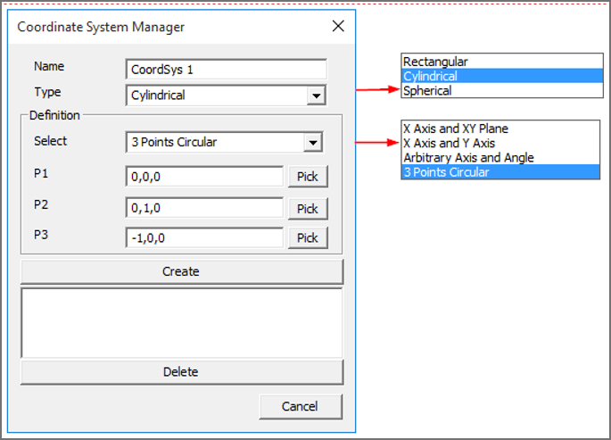
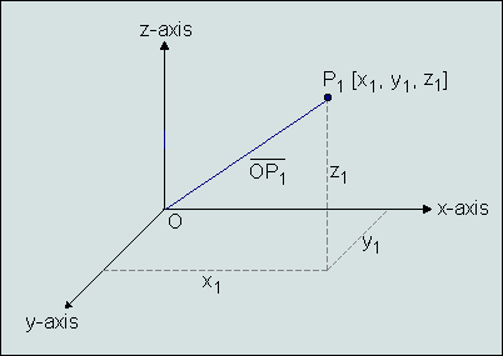
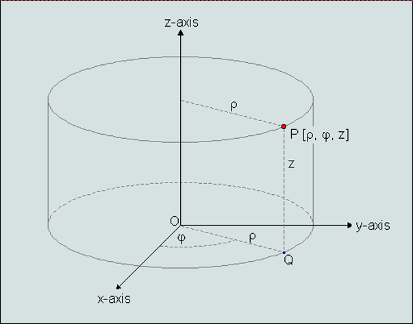
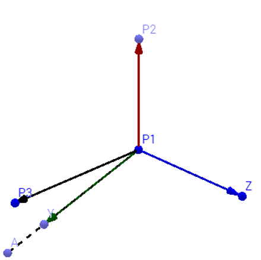
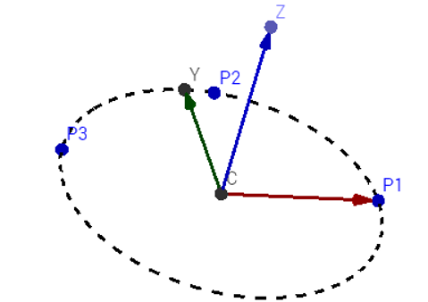

User Coordinate System
VCollab Pro provides different types of interfaces for users to define their own coordinate system to visualize CAE results .
Coordinate System Manager Panel
Click Tools|User Coordinate System

The various fields and controls available on the Coordinate System Manager Panel are explained below:
| Name | New Coordinate system name. |
|---|---|
| Type | Coordinate system type. i.e., Rectangular/Cylindrical/Spherical. |
| Definition | Allows users to select an interface method to define coordinate system. |
| Origin | Allows users to pick vertex in model or enter new origin coordinates separated by commas. |
| X Axis | Defines X axis vector. |
| XY Plane | Defines Y axis vector. |
| Create | Creates new coordinate system and adds to the list box. |
| Delete | Deletes selected coordinate systems by names. |
Types of Coordinate Systems
VCollab Pro supports following coordinate system types,
1.Rectangular
A cartesian coordinate system represented as (X, Y, Z) .

2.Cylindrical
A Polar coordinate system represented as (r, ??, Z) where,
r is the radial distance from the coordinate to Z axis.
?? is the angle of deviation from the X axis to projection of OP into XY plane (OQ).
Z is the same as in the Cartesian coordinate system.

3. Spherical
A Polar coordinate system represented as (r,?? ,??) where,
r is the distance from origin to the coordinate.
?? is the angle of deviation from the X axis to projection of OP into XY plane (OQ).
?? is the angle of deviation from Z axis to the coordinate positional vector OP.

Definition of Coordinate System
Independent of types, any new coordinate system requires a new origin and orientation relative to the global or current coordinate system.
VCollab Pro provides different ways for users to define a new coordinate system. Origin is a common input for all methods. Users can pick a vertex in the model to define as new origin.
X Axis and XY Plane User has to provide 3 points. Pick option can be used to select vertices from the model.
Origin : First Point (P1)X axis : Second point - Origin (P2-P1)Z axis : Cross product of (P3-P1) and (P2-P1)Y axis : Cross product of Z and X axes.

X Axis and the Y Axis Pick option is enabled only for origin.
Origin : Picked or Entered point.X Axis : Entered by user.Y Axis : Entered by user.- Arbitrary Axis and Angle Pick option is enabled only for origin.Orientation of new coordinate system is defined by the axis of rotation and angle in degrees.Origin : Picked or Entered point.X Axis : Derived from Orientation.Y Axis : Derived from Orientation.
- 3 Points Circular User has to pick or enter three non collinear points(P1,P2,P3). Points are considered in the periphery of a circle.Origin : Center of circle.X Axis : Origin to P1.Z Axis : Normal of plane formed by circle.Y axis : Derived from X and Z axes.

Steps to create a new user defined coordinate system (UCS)
- Enter a new Coordinate system name.
- Select coordinate type
- Select a method to define a new coordinate system.
- Enter or Pick coordinates to define origin, X and Y axes.
- Click Create to create a new UCS.
- The newly created UCS will be listed in the list box with check boxes.
- Users can turn ON/OFF UCS visibility in the viewer using corresponding checkboxes.
- Users can select multiple coordinate systems and delete them.